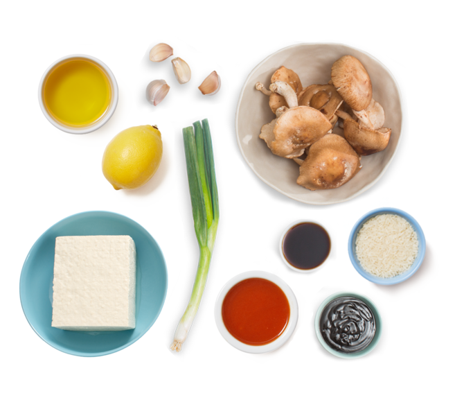

Asian-inspired Garlic Tofu with Rice
TIME
15 mins
SERVINGS
2
NUTRITION
Est. 760 calories
This recipe offers all the warm, hearty flavor of our favorite Eastern European comfort food. Thin-sliced beef takes on an delicious tenderness when sautéed with caramelized onion—whose rich, flavorful sweetness is accented by our side of thyme-roasted beet and carrots. (Depending on what’s best at the farms near you, you may receive a round or cylindrical beet.) And to complete the meal, we’re preparing a winter classic: potato latkes, made with matzo meal and egg and served with a dollop of crème fraîche.
INGREDIENTS
| 1 cup | Rice |
| 2 cup | Tofu |
| 4 | Green Onions |
| 9 | Shiitake Mushrooms |
| 2 Tbsp | Soy Sauce |
| ¼ cup | Hoisin Sauce |
| 1 Tsp | Lemon |
| 3 cloves | Garlic |
Not included in your Snack Sack
| 2 Tbsp | Olive Oil |
| 2 Tsp | Hot Sauce |
INSTRUCTIONS

To make the Asian garlic sauce: In a small bowl, combine 1/4 cup hoisin sauce, 2 Tbsp soy sauce, 3 cloves minced garlic and dash of hot sauce, if using. Set aside and let the flavors meld.

To prepare the tofu, discard the water from the tofu container, remove the tofu block from the container and blot with paper towels to remove excess moisture. Cut the block into about 1-inch cubes.
Add the cubed tofu to the sauce and gently toss until thoroughly coated. Cover and place the mixture in the fridge. Allow the mixture to marinate for at least 30 minutes.
While tofu marinates, cook 1 cup rice according to package directions. Season to taste. While the rice cooks, combine 4 chopped green onions with 9 sliced mushrooms.
In a skillet or wok, heat 2 Tbsp olive oil over medium heat. Add the marinated tofu; spread out in a single layer. Cook for 5 minutes or until browned on one side, then flip the tofu cubes. Cook another 3-4 minutes.
Add green onions and mushrooms for the last two minutes of cook time. You can also add more hoisin sauce if mixture begins to dry out. Serve over rice and top with garnishes of your choice- lemon, sesame seeds, or pepper flakes.